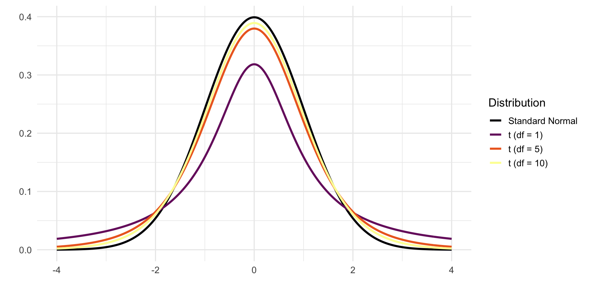

21 Estimation
When working with data, we often face the challenge of estimating unknown characteristics of a population based on a limited set of observations: a sample. These characteristics could be the population mean (\(\mu\)), the population proportion (\(p\)), or the population variance (\(\sigma^2\)), among others. In general, we denote the unknown population parameter we wish to estimate by \(\theta\).
Suppose we collect a random sample consisting of \(n\) independent observations, denoted by \(X_1, X_2, \dots, X_n\). Based on this sample, we compute an estimate of \(\theta\), which we denote as \(\hat{\theta}\). For instance, if the parameter of interest is the population mean \(\mu\), then the corresponding estimate is the sample mean \(\bar{X}\). If the parameter of interest is the population variance \(\sigma^2\), the estimate is the sample variance \(s^2\).
Because the sample is randomly drawn from the population, the estimate \(\hat{\theta}\) is itself a random variable. Its value depends on the specific observations in the sample, and therefore it varies from sample to sample. The distribution of this estimate across many repeated samples is known as its sampling distribution (see Chapter 17 and Chapter 18). Understanding the behavior of this distribution is central to inferential statistics: it allows us to assess the uncertainty in our estimates and build confidence intervals, conduct hypothesis tests, and more.
Naturally, we hope that the value of our estimate \(\hat{\theta}\) is close to the true, unknown value of \(\theta\). However, there is always a degree of uncertainty involved. To evaluate the quality of an estimator, we study its properties, most importantly, its expected value and its variance.
21.1 Estimators, Estimate, Estimands
For clarity, it’s important to distinguish between three closely related but conceptually distinct terms in inferential statistics: estimand, estimator, and estimate.
Estimand: This is the target of our inference—the unknown quantity or parameter in the population we want to learn about. Examples include the population mean \(\mu\), the proportion of voters supporting a policy \(p\), or the difference in means between two groups \(\mu_1 - \mu_2\).
Estimator: A formula or rule that we apply to sample data in order to make an informed guess about the estimand. It is a random variable, as it depends on the data, which in turn vary across samples. For instance, the sample mean \(\bar{X}\) is an estimator for the population mean \(\mu\).
Estimate: The actual numerical result obtained when we apply the estimator to a specific dataset. It is a fixed number, not a random variable. For example, if \(\bar{X} = 7.4\) from our sample, then 7.4 is our estimate of the population mean.
In simpler terms:
| Term | Role | Example |
|---|---|---|
| Estimand | What we want to know | \(\mu\), \(p\), \(\mu_1 - \mu_2\) |
| Estimator | How we calculate it | \(\bar{X}\), \(\hat{p}\) |
| Estimate | What we get from our data | 7.4, 0.38 |
⚠️ While these terms are sometimes used interchangeably in casual discussion, understanding their formal distinction is crucial for clear statistical reasoning.
In this text, we may occasionally use “estimate” loosely, but rest assured; we’ll always be clear about what we’re inferring, how we’re doing it, and what the result actually tells us.
21.2 Properties of Estimators
An estimator’s quality is assessed through certain desirable properties. The most fundamental ones are unbiasedness, consistency, and efficiency.
An estimator \(\hat{\theta}\) is called unbiased if its expected value equals the true parameter:
\[ E(\hat{\theta}) = \theta. \]
This means that, on average across many samples, the estimator hits the correct value. If this condition is not met, the estimator is said to have a bias, defined as:
\[ \text{Bias}(\hat{\theta}) = E(\hat{\theta}) - \theta. \]
An estimator with zero bias is called unbiased. But just being correct on average is not enough. We also want our estimator to be reliable, that is, to give values that are close to the true parameter in most samples, not just on average.
This brings us to the property of consistency. An estimator is consistent if it gets arbitrarily close to the true parameter as the sample size increases. Formally, a consistent estimator \(\hat{\theta}_n\) satisfies:
\[ \hat{\theta}_n \xrightarrow{p} \theta \quad \text{as } n \to \infty. \]
That is, the probability that the estimator deviates substantially from \(\theta\) goes to zero as the number of observations grows. Consistency ensures long-run accuracy with enough data.
Finally, among several unbiased and consistent estimators, we may prefer the one that tends to stay closest to the target in each sample. This is the idea behind efficiency. An estimator is more efficient if it has smaller variance among all unbiased estimators. In practical terms, this means it’s more precise: it fluctuates less from sample to sample, producing estimates tightly clustered around the true value. When comparing two unbiased estimators of the same parameter, the one with the smaller variance is considered more efficient.
To illustrate these concepts, consider the dartboard image below:

Together, these properties give us a clear framework for evaluating the reliability of estimators. Ideally, we want an estimator that is unbiased and has the smallest possible variance, a combination that yields both accuracy and precision in estimation.
21.3 Point Estimation
In statistical inference, we often aim to estimate unknown characteristics of a population—such as its average income, the proportion of voters in favor of a policy, or the variance in housing prices. This process of using data from a sample to calculate a single value as a “best guess” for a population parameter is known as point estimation.
Let us assume we have a random sample \(X_1, X_2, \ldots, X_n\) of \(n\) independent observations from a population with an unknown mean \(\mu\) and variance \(\sigma^2\). A point estimator is a function of the sample data used to estimate a population parameter.
For instance:
- The population mean \(\mu\) is typically estimated by the sample mean \(\bar{X} = \frac{1}{n} \sum_{i=1}^{n} X_i\)
- The population proportion \(p\) is estimated by the sample proportion \(\hat{p} = \frac{x}{n}\), where \(x\) is the number of “successes”
- The population variance \(\sigma^2\) is estimated by the sample variance \(s^2 = \frac{1}{n-1} \sum_{i=1}^{n} (X_i - \bar{X})^2\)
These estimators are derived from the data and yield a specific number once we collect our sample. However, prior to observing the data, the estimator is a random variable because it depends on the randomly selected sample.
Since estimators are functions of random samples, they too follow a probability distribution. This distribution is known as the sampling distribution of the estimator (see Chapter 17 and Chapter 18). It tells us how the estimator would vary if we repeatedly took samples of the same size from the same population.
A crucial insight here is that the larger the sample size, the less variability the estimator will show across repeated samples, leading to more reliable estimation.
Understanding the quality of an estimator involves examining the theoretical properties mentioned above:
-
Unbiasedness: An estimator \(\hat{\theta}\) is said to be unbiased for a parameter \(\theta\) if its expected value equals the true parameter:
\[ E(\hat{\theta}) = \theta \]For example (this was shown in detail in Chapter 17):
- \(E(\bar{X}) = \mu\), so the sample mean is an unbiased estimator of the population mean.
- \(E(\hat{p}) = p\), meaning the sample proportion is also unbiased for the true proportion.
- \(E(s^2) = \sigma^2\), making \(s^2\) an unbiased estimator of the population variance.
(Note: The sample standard deviation \(s\) is not an unbiased estimator of \(\sigma\).)
-
Variance: The spread of the estimator’s sampling distribution is captured by its variance. Smaller variance means the estimator tends to be closer to the true parameter.
For the sample mean, this is given by:
\[ \operatorname{Var}(\bar{X}) = \frac{\sigma^2}{n} \]
Similarly, for the sample proportion: \[ \operatorname{Var}(\hat{p}) = \frac{p(1 - p)}{n} \]These expressions show that increasing the sample size \(n\) decreases the variance of the estimator.
Standard Error: The standard deviation of an estimator’s sampling distribution is called the standard error (SE). It quantifies how much the estimator would vary from sample to sample: \[ \text{SE}(\bar{X}) = \sqrt{\frac{\sigma^2}{n}}, \quad \text{SE}(\hat{p}) = \sqrt{\frac{p(1 - p)}{n}} \]
In practice, when \(\sigma^2\) or \(p\) are unknown, we often substitute their estimates.
Point estimation provides an intuitive way to infer unknown quantities in a population using observed sample data. It’s the first essential tool in the inferential statistics toolbox, allowing us to move from descriptive summaries to educated guesses about the world beyond our data. In the coming chapters, we will build on these estimators to construct confidence intervals and perform hypothesis testing, all grounded in the probabilistic behavior of these sampling distributions.
21.4 Interval Estimation
In statistics, a single number, known as a point estimate, can give us an estimate of a population parameter, like the mean. But such an estimate tells us little about how precise or reliable it is. After all, due to the randomness inherent in sampling, our estimate could vary from sample to sample. That’s why we turn to interval estimation.
A confidence interval provides a range of plausible values for the unknown parameter. It gives a way to quantify the uncertainty of our point estimate. The general form of a confidence interval can be written as:
\[ \text{Point Estimate} \pm \text{Margin of Error} \]
More formally, a confidence interval is constructed so that, with a specified probability known as the confidence level, contains the true value of the parameter. This probability is denoted by \(1 - \alpha\), where \(\alpha\) is the significance level. Common choices are 95% confidence (\(\alpha = 0.05\)) or 99% confidence (\(\alpha = 0.01\)). The higher the confidence level, the wider the interval must be to ensure it covers the true parameter more frequently in repeated samples.
While a point estimate gives us a single best guess for the value of a population parameter, it offers no information about the uncertainty of that guess. This is visualized in Figure 21.2. Imagine you’re trying to catch a fish (think parameter) you can’t quite see. Point estimation is like throwing a spear: accurate if you hit, but there’s a good chance you’ll miss. Interval estimation is more forgiving: it’s like casting a net. You may not catch the exact center, but you’re much more likely to get the fish. This is exactly what confidence intervals offer: a wider, more reliable shot at capturing the truth.

21.4.1 Confidence Interval for the Population Mean
When we talk about a confidence interval for the population mean \(\mu\) with a confidence level of 95%, we mean an interval that, in the long run, will contain the true value of \(\mu\) in 95% of repeated samples. In practice, we never know the true mean, but we use our sample data to construct a range where we believe the mean is likely to lie.
More precisely, the endpoints of the interval (called the Lower Confidence Limit (LCL) and Upper Confidence Limit (UCL)) are calculated as:
\[ \begin{aligned} \text{LCL} &= \bar{X} - z_{\alpha/2} \cdot \frac{\sigma}{\sqrt{n}}, \\ \text{UCL} &= \bar{X} + z_{\alpha/2} \cdot \frac{\sigma}{\sqrt{n}} \end{aligned} \]
For a 95% confidence level, the critical value is \(z_{\alpha/2} \approx 1.96\).
Before we observe any data, the sample mean \(\bar{X}\) is a random variable. If the population is normally distributed with known variance \(\sigma^2\), then:
\[ \bar{X} \sim \mathcal{N}(\mu, \frac{\sigma^2}{n}) \]
Standardizing gives:
\[ Z = \frac{\bar{X} - \mu}{\sigma/\sqrt{n}} \sim \mathcal{N}(0, 1) \]
We know (from Appendix A):
\[ P(-1.96 \leq Z \leq 1.96) = 0.95 \]
Rewriting this inequality in terms of \(\mu\):
\[ P\left(\underbrace{\bar{X} - 1.96 \cdot \frac{\sigma}{\sqrt{n}}}_{\text{LCL}} \leq \mu \leq \underbrace{\bar{X} + 1.96 \cdot \frac{\sigma}{\sqrt{n}}}_{\text{UCL}}\right) = 0.95 \]
This tells us that if we repeat this sampling process many times, 95% of the resulting intervals will contain the true population mean. This is visualized in Figure 21.3.
Each time we draw a new sample from a population and construct a confidence interval for the population mean \(\mu\), the endpoints of that interval are random; they depend on the data from that specific sample. This means that the interval can change from sample to sample. However, if we use a 95% confidence level, then in the long run, 95% of those intervals will capture the true mean, and 5% will not.
In other words, we can’t guarantee that a single confidence interval contains the population mean, but we can say that the method used to construct it is correct 95% of the time. To show this, we perform a simulation: we simulate 100 samples from the same population, construct a 95% confidence interval for each, and visualizes which ones do and do not include the true population mean. Each vertical line in Figure 21.4 represents one confidence interval from a sample of size \(n = 30\). The blue line shows the true mean \(\mu = 5\) and. The grey intervals contain the true mean, as expected 95% of the time. Red intervals are the $$5% that miss, a natural consequence of statistical variation.

So how do we interpret the confidence interval? Before we collect any data, we can say that there is a 95% probability that the interval we are about to compute will contain the true population mean, \(\mu\). This probability statement refers to the process, not the specific interval. That is, we are 95% confident in the method, not in any one result. Once a sample is drawn and the confidence interval is computed, the situation changes. The interval is now fixed, it either contains \(\mu\) or it doesn’t. We no longer speak of probabilities regarding this specific interval. However, what we do know is this:
The interval was calculated using a procedure that, in the long run, produces intervals that contain the true mean in 95% of all cases.
This is the essence of the frequentist interpretation of confidence intervals. It doesn’t tell us the probability that our specific interval contains \(\mu\), but it does provide a measure of trust in the procedure we used to create it. That’s why we refer to it as a “confidence” interval — not because we are certain, but because we have reason to be confident based on the method’s performance over repeated samples.
So far, we have only constructed 95% confidence intervals for a population mean. This means that if we were to repeat the sampling procedure many times, approximately 95% of those intervals would contain the true population mean, \(\mu\).
But 95% is not a fixed rule. We can choose other confidence levels—such as 90% or 99%—depending on how certain we want to be. The trade-off is that a higher level of confidence results in a wider interval, while a lower confidence level gives a narrower but less certain estimate.
When the population standard deviation \(\sigma\) is known and the sampling distribution of the mean is approximately normal (either by assumption or via the Central Limit Theorem), the general structure of a confidence interval for the mean is:
\[ \bar{X} \pm z_{\alpha/2} \cdot \frac{\sigma}{\sqrt{n}} \]
where:
-
\(\bar{X}\) is the sample mean
-
\(\sigma\) is the population standard deviation
-
\(n\) is the sample size
- \(z_{\alpha/2}\) is the critical value from the standard normal distribution for the desired confidence level
Some common confidence levels and their corresponding \(z\)-values are shown in Table 21.1 (see Appendix A for the exact values):
| Confidence Level | \(\alpha\) | \(z_{\alpha/2}\) |
|---|---|---|
| 90% | 0.10 | 1.645 |
| 95% | 0.05 | 1.960 |
| 99% | 0.01 | 2.576 |
As seen in Figure 21.5, a higher confidence level (e.g., 99% instead of 95%) leads to a wider interval since the \(z\) value moves further away from the center towards the tails, giving us more “certainty” at the cost of less precision. A larger sample size reduces the standard error \(\frac{\sigma}{\sqrt{n}}\), resulting in a narrower interval, i.e., better precision without sacrificing confidence.

💡 A higher confidence level leads to a wider interval: you’re more confident, but less precise.
This approach provides a principled way of capturing the uncertainty in our estimation of \(\mu\). While the point estimate \(\bar{X}\) gives our best guess, the confidence interval gives us a sense of how variable that estimate might be if we repeated the experiment.
In the following, we continue to build on this framework and explore how confidence intervals can be constructed for other types of parameters and under various assumptions.
Example 21.1: Confidence Interval for a Population Mean
Let’s consider a scenario where we take a random sample of size \(n = 25\) from a normally distributed population. Suppose we know the population standard deviation to be \(\sigma = 15\), and the sample mean is \(\bar{x} = 102\).
We want to construct a 95% confidence interval for the population mean \(\mu\). We use the formula for a confidence interval when the population standard deviation is known:
\[ \bar{x} \pm z_{\alpha/2} \cdot \frac{\sigma}{\sqrt{n}} \]
For a 95% confidence level, the critical value from the standard normal distribution is \(z_{0.025} = 1.96\).
Let’s plug in the values:
\[ 102 \pm 1.96 \cdot \frac{15}{\sqrt{25}} = 102 \pm 1.96 \cdot 3 = 102 \pm 5.88 \]
Hence, the 95% confidence interval becomes:
\[ (96.12,\ 107.88) \]
This interval suggests that if we were to repeat this sampling process many times, approximately 95% of the resulting intervals would contain the true population mean \(\mu\).
What if we want a 99% confidence interval? A higher confidence level requires a larger critical value. For 99% confidence, we use \(z_{0.005} = 2.575\). Applying the formula:
\[ 102 \pm 2.575 \cdot \frac{15}{\sqrt{25}} = 102 \pm 2.575 \cdot 3 = 102 \pm 7.725 \]
This results in a wider interval:
\[ (94.275,\ 109.725) \]
As expected, increasing the confidence level results in a wider interval. This reflects greater certainty, more room is allowed to ensure the true mean is captured.
Confidence Intervals with Unknown Variance
In previous examples, we constructed confidence intervals assuming that the population standard deviation \(\sigma\) is known and that the population is normally distributed. While this is convenient for illustrating the basic logic of confidence intervals, it is rarely the case in practice.
But what if \(\sigma\) is unknown?
When \(\sigma\) is unknown, we typically rely on the sample standard deviation \(s\) instead. This introduces an additional source of uncertainty because we are now estimating both the center (\(\bar{X}\)) and the spread (\(s\)) from the sample data.
As a result, our confidence interval becomes wider, especially when the sample size \(n\) is small. To account for this, we use the \(t\)-distribution rather than the standard normal distribution.
We distinguish between two scenarios:
1. Large sample size (\(n \geq 30\)):
When the sample size is large, the Central Limit Theorem (Chapter 19) ensures that the sampling distribution of the mean is approximately normal, even if the population isn’t. In this case, substituting \(s\) for \(\sigma\) has little impact, and we can still use the normal approximation: \[ \bar{x} \pm z_{\alpha/2} \cdot \frac{s}{\sqrt{n}}. \]
2. Small sample size (\(n < 30\)):
When the sample size is small and \(\sigma\) is unknown, we must use the \(t\)-distribution with \(\nu = n-1\) degrees of freedom:
\[ \bar{x} \pm t_{\nu, \alpha/2} \cdot \frac{s}{\sqrt{n}}. \]
Here, \(t_{\nu, \alpha/2}\) is the critical value from the \(t\)-distribution that corresponds to the desired confidence level. This values is obtained from Appendix B and is fully determined by the degrees of freedom \(\nu\) and confidence level \(\alpha\).
Introducing the \(t\)-distribution
The Student’s \(t\)-distribution is a fundamental tool in statistics when estimating a population mean from a small sample, especially in cases where the population standard deviation \(\sigma\) is unknown. While it resembles the standard normal distribution \(N(0, 1)\) in shape, the \(t\)-distribution has heavier tails. These heavier tails reflect the added uncertainty introduced by estimating \(\sigma\) with the sample standard deviation \(s\).
The exact shape of the \(t\)-distribution depends on its degrees of freedom, typically \(\nu = n - 1\), where \(n\) is the sample size. As the sample size increases, the estimate of \(\sigma\) becomes more reliable, and the \(t\)-distribution gradually approaches the normal distribution. In fact, as \(\nu \to \infty\), the \(t\)-distribution converges to \(N(0, 1)\) (see Figure 21.6).
When the population is normally distributed and we collect a random sample of size \(n\), the following standardized statistic follows a \(t\)-distribution with \(n - 1\) degrees of freedom:
\[ \frac{\bar{X} - \mu}{s / \sqrt{n}} \sim t(n - 1) \]
This formulation allows us to perform valid inference about the population mean \(\mu\), even without knowing the true standard deviation \(\sigma\), as long as the population itself is assumed to be normally distributed.

Summary: Confidence Intervals for the Population Mean
When constructing a confidence interval for the population mean \(\mu\), the formula depends on three key factors:
- whether the population standard deviation \(σ\) is known,
- the size of the sample, and
- whether the population is normally distributed.
Table 21.2 below summarizes which distribution and formula to use in different situations:
| Conditions | Variance Assumptions | Formula |
|---|---|---|
| \(n \geq 30\) (any population) | \(\sigma^2\) known | \(\bar{x} \pm z_{\alpha/2} \left( \frac{\sigma}{\sqrt{n}} \right)\) |
| \(\sigma^2\) unknown | \(\bar{x} \pm z_{\alpha/2} \left( \frac{s}{\sqrt{n}} \right)\) | |
| \(n < 30\), normal population | \(\sigma^2\) known | \(\bar{x} \pm z_{\alpha/2} \left( \frac{\sigma}{\sqrt{n}} \right)\) |
| \(\sigma^2\) unknown | \(\bar{x} \pm t_{\nu,\alpha/2} \left( \frac{s}{\sqrt{n}} \right)\) | |
| \(n < 30\), population is not normally distributed | — | Confidence interval cannot be calculated |
Note: If the sample size is small (\(n < 30\)) and the population is not normally distributed, we cannot safely use these formulas to calculate a confidence interval for \(\mu\). In such cases, resampling methods like bootstrapping or non-parametric approaches may be more appropriate.
Example 21.2: Confidence Interval for a Population Mean, \(n\) small, variance unknown
In a laboratory, measurements are taken on a variable that is assumed to be normally distributed. On one occasion, 12 measurements are obtained, resulting in:
-
\(\bar{x} = 9.6\)
- \(s = 1.89\)
We are asked to compute a 95% confidence interval for the population mean \(\mu\).
Since we have a small sample size (\(n = 12\)) and the population variance \(\sigma^2\) is unknown, we use the Student’s t-distribution with \(n - 1 = 11\) degrees of freedom. The general formula for the confidence interval is:
\[ \bar{x} \pm t_{\nu, \alpha/2} \cdot \frac{s}{\sqrt{n}} \]
For a 95% confidence level, \(\alpha = 0.05\), so \(\alpha/2 = 0.025\). From the \(t\)-distribution table Appendix B, we find:
\[ t_{11, 0.025} = 2.201 \]
We can now compute the confidence interval bounds as follows.
\[ \bar{x} \pm 2.201 \cdot \frac{1.89}{\sqrt{12}} = 9.6 \pm 2.201 \cdot 0.545 \]
\[ 9.6 \pm 1.20 \]
Thus, the 95% confidence interval for \(\mu\) is:
\[ [8.40,\ 10.80] \]
We can say that the true population mean \(\mu\) lies between 8.40 and 10.80 with 95% confidence. This means that if we were to repeat this sampling process many times, approximately 95% of the constructed confidence intervals would contain the true mean.
21.4.2 Confidence Interval for the Population Proportion
Just as we can construct a confidence interval for a population mean, we can also build one for a proportion. This is particularly useful when dealing with categorical data, for instance, estimating the proportion of defective units in a production process or the share of voters supporting a candidate.
Let \(p\) denote the population proportion, that is, the true (but unknown) share of the population with a specific characteristic. As before, we estimate \(p\) using the sample proportion \(\hat{p}\), defined as:
\[ \hat{p} = \frac{\text{number of observations with the characteristic}}{n} \]
This is the point estimate of \(p\). Under random sampling, this estimator is unbiased, meaning:
\[ E(\hat{p}) = p \]
The variance of \(\hat{p}\) is:
\[ \text{Var}(\hat{p}) = \frac{p(1 - p)}{n} \]
This was shown in detail in Chapter 18.
Since \(p\) is unknown, we approximate this variance using the observed sample proportion:
\[ \widehat{\text{Var}}(\hat{p}) = \frac{\hat{p}(1 - \hat{p})}{n} \]
When the sample size \(n\) is sufficiently large, the sampling distribution of \(\hat{p}\) can be approximated by a normal distribution (thanks to the Central Limit Theorem):
\[ \frac{\hat{p} - p}{\sqrt{\frac{\hat{p}(1 - \hat{p})}{n}}} \overset{\text{apx}}{\sim} N(0, 1) \]
This approximation holds well when the sample size satisfies the following rule of thumb: \(np(1 - p) > 5\). If this condition is met, we can construct a confidence interval using the normal distribution.
The confidence interval for the population proportion \(p\) is given by:
\[ \hat{p} \pm \underbrace{z_{\alpha/2} \cdot \sqrt{\frac{\hat{p}(1 - \hat{p})}{n}} }_{\text{margin of error}} \] The value of \(z_{\alpha/2}\) depends on the desired confidence level, just as before shown in Table 21.1.
To estimate a population proportion using confeidence intervals:
- Compute the sample proportion \(\hat{p}\).
- Calculate the standard error \(\sqrt{\hat{p}(1 - \hat{p}) / n}\).
- Use the appropriate \(z\)-value for your confidence level.
- Construct the interval using \(\hat{p} \pm\) margin of error.
This method allows us to make probabilistic statements about the true population proportion, provided the sample size is sufficiently large.
Note on the t-distribution and proportions
The t-distribution is not used for constructing confidence intervals for proportions, even when sample sizes are small. Proportions are based on the binomial distribution, and standard confidence intervals rely on the normal approximation when conditions are met. If these conditions aren’t satisfied, exact methods or adjusted intervals should be used instead.
Example 21.3: Confidence Interval for a Proportion
We take a random sample of \(n = 1200\) people from a large population. Of those sampled, 43.5% report supporting a certain political party. Construct a 95% confidence interval for the true proportion \(p\) of the population who support the party.
We are given:
- \(\hat{p} = 0.435\)
- \(n = 1200\)
- Confidence level = 95% \(\Rightarrow \alpha = 0.05\) \(\Rightarrow z_{\alpha/2} = z_{0.025} = 1.96\)
The confidence interval for a population proportion is calculated as:
\[ \hat{p} \pm z_{\alpha/2} \cdot \sqrt{\frac{\hat{p}(1 - \hat{p})}{n}} \]
Substitute the values:
\[\begin{split} 0.435 \pm 1.96 \cdot \sqrt{\frac{0.435(1 - 0.435)}{1200}} & = 0.435 \pm 1.96 \cdot \sqrt{\frac{0.245775}{1200}} \\ & = 0.435 \pm 1.96 \cdot \sqrt{0.0002048} \\ & = 0.435 \pm 1.96 \cdot 0.0143 \\ & = 0.435 \pm 0.028 \\ \end{split} \]
Thus, the 95% confidence interval is:
\[ [0.407,\ 0.463] \]
This means we are 95% confident that the true proportion of supporters in the population lies between 40.7% and 46.3%.
21.4.3 Confidence Intervals for the Difference Between Two Population Means
When comparing two groups, we often want to estimate the difference between their population means. This leads us to construct a confidence interval for \(\mu_x - \mu_y\). There are two main cases to consider here:
Case 1: Two Independent Samples
This scenario assumes we take independent random samples from two different populations. We define the populations as follows:
| Population | Mean | Standard Deviation |
|---|---|---|
| Population 1 | \(\mu_x\) | \(\sigma_x\) |
| Population 2 | \(\mu_y\) | \(\sigma_y\) |
We collect independent samples:
| Size (\(n\)) | Sample Mean | Sample Standard Deviation | |
|---|---|---|---|
| Sample from 1 | \(n_x\) | \(\bar{x}\) | \(s_x\) |
| Sample from 2 | \(n_y\) | \(\bar{y}\) | \(s_y\) |
We estimate the difference in population means using the point estimate:
\[ \bar{x} - \bar{y} \]
This is an unbiased estimator, meaning:
\[ E(\bar{x} - \bar{y}) = E(\bar{x}) - E(\bar{y}) = \mu_x - \mu_y \]
Assuming the samples are independent, the variance of the difference between sample means is:
\[ \text{Var}(\bar{x} - \bar{y}) = \frac{\sigma_x^2}{n_x} + \frac{\sigma_y^2}{n_y} \]
When the population standard deviations \(\sigma_x\) and \(\sigma_y\) are unknown (as is usually the case), we substitute the sample standard deviations \(s_x\) and \(s_y\) instead.
The appropriate method for constructing a confidence interval depends on several factors:
- The sample sizes: Are they large (\(\geq 30\)) or small (\(< 30\))?
- The distribution of the populations: Are they normally distributed?
- Whether the population variances are known or unknown
- Whether we assume the variances are equal or not
Large Independent Samples (\(n_x \geq 30\), \(n_y \geq 30\))
When both sample sizes are large, the Central Limit Theorem allows us to use the standard normal distribution (\(Z\)), regardless of the population distributions.
a) Population Variances Known
Thsi is the more rare scenario in which we use the following formula: \[ \bar{x} - \bar{y} \pm z_{\alpha/2} \cdot \sqrt{ \frac{\sigma_x^2}{n_x} + \frac{\sigma_y^2}{n_y} } \]
a) Population Variances Unknown
This scenario is more common and we estimate the population variances using the sample variances: \[ \bar{x} - \bar{y} \pm z_{\alpha/2} \cdot \sqrt{ \frac{s_x^2}{n_x} + \frac{s_y^2}{n_y} } \] The critical \(z\)-value is selected to match the desired confidence level (e.g., \(z = 1.96\) for 95%).
Small Independent Samples (at least one of \(n_x\) or \(n_y\) < 30)
In this case, we must assume that both populations are normally distributed to proceed.
a) Population Variances Known
\[ \bar{x} - \bar{y} \pm z_{\alpha/2} \cdot \sqrt{ \frac{\sigma_x^2}{n_x} + \frac{\sigma_y^2}{n_y} } \]
b) Population Variances Unknown but Assumed Equal
Then we use the pooled variance which provides a combined estimate of the common variance by weighting the sample variances according to their degrees of freedom. The formula for pooled varince is: \[ s_p^2 = \frac{(n_x - 1)s_x^2 + (n_y - 1)s_y^2}{n_x + n_y - 2} \] Here, \(s_x^2\) and \(s_y^2\) are the sample variances from the two groups, and \(n_x\) and \(n_y\) are the respective sample sizes. This weighted average gives a more stable estimate of variance when the equal-variance assumption is justified. Use this method only if there is reasonable evidence that the population variances are equal. The formula becomes: \[ \bar{x} - \bar{y} \pm t_{\nu, \alpha/2} \cdot \sqrt{ s_p^2 \left( \frac{1}{n_x} + \frac{1}{n_y} \right) } \] where the degrees of freedom are: \[ \nu = (n_x-1) + (n_y-1) = n_x + n_y - 2 \]
c) Population Variances Unknown and Not Assumed Equal (Welch’s t-test)
Here, we cannot assume equal variance, we rely on the so called Welch’s method, which is an adaptation of the standard two-sample \(t\)-test that does not assume equal population variances. It is more flexible and robust, especially when sample sizes or variances differ between groups. Instead of pooling the variances, Welch’s method uses the individual sample variances to compute the standard error and an approximate degrees of freedom, denoted \(\nu\). The confidence interval is thus given by:
\[ \bar{x} - \bar{y} \pm t_{\nu, \alpha/2} \cdot \sqrt{ \frac{s_x^2}{n_x} + \frac{s_y^2}{n_y} } \] with degrees of freedom approximated by: \[ \nu \approx \frac{ \left( \frac{s_x^2}{n_x} + \frac{s_y^2}{n_y} \right)^2 }{ \frac{(s_x^2 / n_x)^2}{n_x - 1} + \frac{(s_y^2 / n_y)^2}{n_y - 1} } \] This method is more robust and does not assume equal population variances, making it the preferred choice in most small-sample scenarios with unequal spread.
The different cases are summarized in Table 21.3.
| Sample Size & Variance Assumptions | Distribution | Degrees of Freedom (\(\nu\)) | Formula |
|---|---|---|---|
| \(n_x, n_y \geq 30\), \(\sigma_x, \sigma_y\) known | Standard normal \(Z\) | \(\bar{x} - \bar{y} \pm z_{\alpha/2} \cdot \sqrt{ \frac{\sigma_x^2}{n_x} + \frac{\sigma_y^2}{n_y} }\) | |
| \(n_x, n_y \geq 30\), \(\sigma_x, \sigma_y\) unknown | Standard normal \(Z\) | \(\bar{x} - \bar{y} \pm z_{\alpha/2} \cdot \sqrt{ \frac{s_x^2}{n_x} + \frac{s_y^2}{n_y} }\) | |
| \(n_x, n_y < 30\), \(s_x = s_y\) | Pooled \(t\)-distribution | \(n_x + n_y - 2\) | \(\bar{x} - \bar{y} \pm t_{\nu, \alpha/2} \cdot \sqrt{ s_p^2 \left( \frac{1}{n_x} + \frac{1}{n_y} \right) }\) |
| \(n_x, n_y < 30\), \(s_x \neq s_y\) | Welch’s \(t\)-distribution | \(\displaystyle \frac{\left( \frac{s_x^2}{n_x} + \frac{s_y^2}{n_y} \right)^2}{\frac{(s_x^2 / n_x)^2}{n_x - 1} + \frac{(s_y^2 / n_y)^2}{n_y - 1}}\) | \(\bar{x} - \bar{y} \pm t_{\nu, \alpha/2} \cdot \sqrt{ \frac{s_x^2}{n_x} + \frac{s_y^2}{n_y} }\) |
Example 21.4: Confidence Interval for the Difference in Means
Two independent samples were taken from two different populations:
- Sample 1: \(n_x = 51\), \(\bar{x} = 14.3\), \(s_x = 3.18\)
- Sample 2: \(n_y = 52\), \(\bar{y} = 12.6\), \(s_y = 3.5\)
Construct a 95% confidence interval for the difference in population means, \(\mu_x - \mu_y\).
Since both sample sizes are greater than 30, and population variances are unknown, we can use the standard normal approximation with sample variances substituted in. That is, we use the formula: \[ \bar{x} - \bar{y} \pm z_{\alpha/2} \cdot \sqrt{ \frac{s_x^2}{n_x} + \frac{s_y^2}{n_y} } \]
where \(z_{0.025} = 1.96\) for a 95% confidence level. We plug in the values: \[ \bar{x} - \bar{y} = 14.3 - 12.6 = 1.7 \] \[ \begin{split} \text{Standard error} & = \sqrt{ \frac{3.18^2}{51} + \frac{3.5^2}{52} } \\ & \approx \sqrt{ \frac{10.1124}{51} + \frac{12.25}{52} } \\ & \approx \sqrt{0.1983 + 0.2356} \\ & \approx \sqrt{0.4339} \\ & \approx 0.6588 \end{split} \] and calculate the margin of error as: \[ 1.96 \cdot 0.6588 \approx 1.29 \] So the confidence interval is: \[ 1.7 \pm 1.29 = [0.41, 2.99] \]
Example 21.5: Confidence Interval for the Difference in Means
We are given two independent random samples from normally distributed populations with equal but unknown variances:
| Group | Sample Size | Mean | Standard Deviation |
|---|---|---|---|
| Population 1 | \(n_x = 11\) | \(\bar{x} = 1.23\) | \(s_{x}\) = \(0.23\) |
| Population 2 | \(n_y =13\) | \(\bar{y} = 1.18\) | \(s_y= 0.27\) |
We are to compute a 95% confidence interval for the difference in population means: \(\mu_x - \mu_y\).
Since \(n_x = 11\) and \(n_y = 13\) are both less than 30, and the population variances are assumed equal but unknown, we use the pooled \(t\)-distribution approach. The formula to use is the following: \[ \bar{x} - \bar{y} \pm t_{\nu, \alpha/2} \cdot \sqrt{ s_p^2 \left( \frac{1}{n_x} + \frac{1}{n_y} \right) } \]
The pooled sample variance \(s_p^2\) is computed as: \[ s_p^2 = \frac{(n_x - 1)s_x^2 + (n_y - 1)s_y^2}{n_x + n_y - 2} = \frac{(10)(0.23^2) + (12)(0.27^2)}{22} = 0.0638 \] and the degrees of freedom are given by \[ \nu = n_x + n_y - 2 = 11 + 13 - 2 = 22 \] At the 95% confidence level we have that (Appendix B): \[ t_{22,\ 0.025} = 2.074 \] We substitute values in the formula above: \[\begin{split} 0.05 \pm 2.074 \cdot \sqrt{0.0638 \left( \frac{1}{11} + \frac{1}{13} \right)} & = 0.05 \pm 2.074 \cdot \sqrt{0.0638 \cdot 0.1709} \\ & = 0.05 \pm 2.074 \cdot 0.1045 \\ &\approx 0.05 \pm 0.217 \end{split} \] So the 95% confidence interval is: \[ [-0.167,\ 0.267] \] The 95% confidence interval for the difference in population means is \([-0.167,\ 0.267]\). This means we are 95% confident that the true difference \(\mu_x - \mu_y\) lies somewhere between \(-0.167\) and \(0.267\). Since this interval includes values both below and above zero, the observed difference in sample means may be due to sampling variability rather than a clear difference between the populations.
Case 2: Paired Samples
The second case for two group comparisons, is when we have a single sample from a population, but we take two measurements on each individual in the sample. This means we no longer have two independent samples, but instead we have paired observations.
Paired data, that is, two measurements taken on the same individuals or on matched units is different from having two independent samples. Examples include:
- Measuring blood pressure before and after a treatment on the same patient.
- Comparing performance on two tests taken by the same student.
- Testing two teaching methods on the same group of students. Because the observations are not independent, we must take the dependency into account.
As before, we are interested in constructing a confidence interval for the difference in means based on these paired data. Instead of comparing two separate means though, we analyze the difference within each pair defined as: \[ d_i = x_i - y_i \] Now let:
-
\(\bar{d}\) be the mean of the differences,
-
\(s_d\) the standard deviation of the differences,
- \(n\) the number of pairs. Then, the confidence interval for the mean difference \(\mu_d\) is: \[ \bar{d} \pm t_{n - 1, \alpha/2} \cdot \frac{s_d}{\sqrt{n}} \]
This formula is based on the one-sample \(t\)-distribution with \(n - 1\) degrees of freedom.
When to Use This Method
Use the paired \(t\)-method when:
- The same subject is measured twice (e.g., before and after),
- The data is naturally paired (e.g., matched cases),
- The differences \(d_i\) are approximately normally distributed.
Suppose we are studying the effect of a blood pressure treatment. For each individual in our sample, we measure blood pressure before and after treatment as shown in the table below:
| Individual | After (\(x\)) | Before (\(y\)) | Difference (\(d = x - y\)) |
|---|---|---|---|
| 1 | \(x_1\) | \(y_1\) | \(d_1 = x_1 - y_1\) |
| 2 | \(x_2\) | \(y_2\) | \(d_2 = x_2 - y_2\) |
| \(\vdots\) | \(\vdots\) | \(\vdots\) | \(\vdots\) |
| \(n\) | \(x_n\) | \(y_n\) | \(d_n = x_n - y_n\) |
These \(d_1, d_2, \dots, d_n\) form a sample from a population of differences with population mean \(\mu_d\) and variance \(\sigma_d^2\). We estimate the population mean difference \(\mu_d\) using the sample mean of the differences: \[ \bar{d} = \frac{1}{n} \sum_{i=1}^n d_i \] This is an unbiased estimator, since: \[ E(\bar{d}) = \mu_d \quad \text{and} \quad \text{Var}(\bar{d}) = \frac{\sigma_d^2}{n} \] The sample variance of the differences is: \[ s_d^2 = \frac{1}{n - 1} \sum_{i=1}^n (d_i - \bar{d})^2 \] and the estimated standard error is: \[ \text{SE} = \frac{s_d}{\sqrt{n}} \]
There are (again) two scenarios for constructing a confidence interval:
Large sample siez (that is \(n\geq 30\))
When the sample size is large (regardless of the population distribution), the confidence interval is based on the standard normal distribution: \[ \bar{d} \pm z_{\alpha/2} \cdot \frac{s_d}{\sqrt{n}} \]Small sample size and population of differences is normally distributed
When \(n < 30\) and we assume normality, we use the \(t\)-distribution so the confeidence interval is given by: \[ \bar{d} \pm t_{\nu,\alpha/2} \cdot \frac{s_d}{\sqrt{n}}, \quad \nu = n - 1 \]
Note: In both cases, we assume the population variance \(\sigma_d^2\) is unknown, which is typically the case in practice.
The different scenarios are summarized in Table 21.4.
| Conditions | Variance Assumptions | Formula |
|---|---|---|
| \(n \geq 30\), any population distribution | \(\sigma_d^2\) known | \(\bar{d} \pm z_{\alpha/2} \left( \frac{\sigma_d}{\sqrt{n}} \right)\) |
| \(\sigma_d^2\) unknown | \(\bar{d} \pm z_{\alpha/2} \left( \frac{s_d}{\sqrt{n}} \right)\) | |
| \(n < 30\), population of differences is normal | \(\sigma_d^2\) known | \(\bar{d} \pm z_{\alpha/2} \left( \frac{\sigma_d}{\sqrt{n}} \right)\) |
| \(\sigma_d^2\) unknown | \(\bar{d} \pm t_{\nu,\alpha/2} \left( \frac{s_d}{\sqrt{n}} \right)\) | |
| \(n < 30\), population of differences is not normal | — | Confidence interval cannot be calculated |
Example 21.6: Confidence Interval for Paired Differences
We have a sample of 6 workers from a normally distributed population. Each worker performs the same task using Method A and Method B, and the time taken in minutes is recorded for both methods:
-
\(X\) = time using Method A
- \(Y\) = time using Method B
We are to compute a 95% confidence interval for the average difference in time (Method A − Method B).
Let \(d = x - y\) be the difference for each individual:
| Person | \(x\) | \(y\) | \(d = x - y\) | \(d - \bar{d}\) | \((d - \bar{d})^2\) |
|---|---|---|---|---|---|
| 1 | 6.0 | 5.4 | 0.6 | 0.3 | 0.09 |
| 2 | 5.0 | 5.2 | -0.2 | -0.5 | 0.25 |
| 3 | 7.0 | 6.5 | 0.5 | 0.2 | 0.04 |
| 4 | 6.2 | 5.9 | 0.3 | 0.0 | 0.00 |
| 5 | 6.0 | 6.0 | 0.0 | -0.3 | 0.09 |
| 6 | 6.4 | 5.8 | 0.6 | 0.3 | 0.09 |
| Total | 1.8 | 0.56 |
Now we can compute the sample statistics:
- Mean difference: \(\bar{d} = \frac{1.8}{6} = 0.3\)
- Variance: \(s_d^2 = \frac{0.56}{5} = 0.112\)
- Standard deviation: \(s_d = \sqrt{0.112} = 0.335\)
We note that \(n < 30\), \(\sigma^2\) is unknown, and we have a normally distributed population. Therefore, a 95% confidence interval for \(\mu_d\) is calculated as follows: \[ \bar{d} \pm t_{\nu, \alpha/2} \cdot \frac{s_d}{\sqrt{n}} \] Since \(n = 6\), degrees of freedom \(\nu = 5\), and \(\alpha = 0.025\), we use (see Appendix B): \[ t_{5, 0.025} = 2.571 \] Substitute values in the confidence interval formula: \[ 0.3 \pm 2.571 \cdot \frac{0.335}{\sqrt{6}} = 0.3 \pm 0.35 \] So the 95% confidence interval is: \[ [-0.05,\ 0.65] \] Since the interval includes 0, we cannot rule out that the two methods are equally effective. With 95% confidence, the average difference in time could be zero.
21.4.4 Confidence Intervals for Differences in Population Proportions
When comparing two independent populations on a binary outcome (such as success/failure), we are often interested in estimating the difference between their population proportions, \(p_x - p_y\). If both samples are large enough, we can use the normal approximation to construct a confidence interval for this difference:
\[ (\hat{p}_x - \hat{p}_y) \pm z_{\alpha/2} \cdot \sqrt{ \frac{\hat{p}_x (1 - \hat{p}_x)}{n_x} + \frac{\hat{p}_y (1 - \hat{p}_y)}{n_y} } \]
This interval provides a plausible range of values for the true difference between the proportions in the two populations. If the confidence interval includes zero, it suggests that the observed difference might be due to random sampling variability, and there may be no real difference between the groups.
Warning
Small Sample Sizes: If either sample is small, specifically, if \(n \cdot \hat{p} < 5\) or \(n \cdot (1 - \hat{p}) < 5\), the normal approximation may not be appropriate.
Example 21.7: Confidence Interval for the Difference Between Two Proportions
We want to estimate the difference in support for a political party between two populations.
- Let \(p_x\) = proportion in population 1 who support the party
- Let \(p_y\) = proportion in population 2 who support the party
We take a simple random sample of:
-
\(n_x = 150\) from population 1, with \(\hat{p}_x = 0.36\)
- \(n_y = 250\) from population 2, with \(\hat{p}_y = 0.27\)
We are to construct a 95% confidence interval for \(p_x - p_y\). Since the sample sizes are large, we use the standard normal approximation for the confidence interval: \[ \hat{p}_x - \hat{p}_y \pm z_{\alpha/2} \cdot \sqrt{ \frac{ \hat{p}_x (1 - \hat{p}_x) }{n_x} + \frac{ \hat{p}_y (1 - \hat{p}_y) }{n_y} } \] With \(z_{\alpha/2} = z_{0.025} = 1.96\), we compute:
\[ 0.36 - 0.27 \pm 1.96 \cdot \sqrt{ \frac{0.36(1 - 0.36)}{150} + \frac{0.27(1 - 0.27)}{250} } \] \[ \begin{split} 0.09 \pm 1.96 \cdot \sqrt{ \frac{0.2304}{150} + \frac{0.1971}{250} } & = 0.09 \pm 1.96 \cdot \sqrt{0.001536 + 0.0007884} \\ & = 0.09 \pm 1.96 \cdot 0.0406 \\ &= 0.09 \pm 0.0796 \end{split} \] So the 95% confidence interval is: \[ [0.0104,\ 0.1696] \] We estimate that the difference in support between the two populations is between 1.0% and 17.0%, with population 1 showing more support. Since the entire interval is above 0, this suggests a real difference in proportions between the populations.
Exercises
- A random sample of 120 families was drawn from a population of approximately 5000 families. The number of children in each selected family was recorded. The sample yielded \(\bar{x} = 1.28\) (mean number of children) and \(s = 1.10\) (sample standard deviation). Assuming the sample is drawn using simple random sampling, calculate a 99% confidence interval for the population mean \(\mu\), the average number of children per family.
Solution
We are given:
- \(\bar{x} = 1.28\)
- \(s = 1.10\)
- \(n = 120\)
- Confidence level: \(99\% \Rightarrow \alpha = 0.01 \Rightarrow \alpha/2 = 0.005\)
- \(z_{\alpha/2} = 2.58\) (from the standard normal table)
Since the sample is large (\(n = 120\)), the Central Limit Theorem applies, and we can use the normal distribution.
The standard error is:
\[ SE = \frac{s}{\sqrt{n}} = \frac{1.10}{\sqrt{120}} \approx 0.1004 \]
Then the confidence interval is:
\[ \bar{x} \pm z_{\alpha/2} \cdot SE = 1.28 \pm 2.58 \cdot 0.1004 \approx 1.28 \pm 0.26 \]
Final interval:
\[ [1.02,\ 1.54] \]
Interpretation: We are 99% confident that the true mean number of children per family in the population lies between 1.02 and 1.54.
- In a small town with 8820 households, a sample of 200 households is taken. In the sample, 60 households have a smart home system installed. Construct a 95% confidence interval for the proportion of households in the entire town that have a smart home system.
Solution
We are given:
- \(n = 200\)
- \(x = 60\)
- \(\hat{p} = \frac{60}{200} = 0.30\)
- \(z_{\alpha/2} = 1.96\) for a 95% confidence level
The standard error is calculated as:
\[ SE = \sqrt{\frac{\hat{p}(1 - \hat{p})}{n}} = \sqrt{\frac{0.30(1 - 0.30)}{200}} = \sqrt{\frac{0.21}{200}} \approx 0.0324 \]
The confidence interval is:
\[ \hat{p} \pm z_{\alpha/2} \cdot SE = 0.30 \pm 1.96 \cdot 0.0324 \approx 0.30 \pm 0.0635 \]
So the 95% confidence interval is approximately:
\[ [0.24, 0.36] \]
To interpret this in terms of number of households:
- \(0.24 \cdot 8820 \approx 2117\)
- \(0.36 \cdot 8820 \approx 3175\)
We can say, with 95% confidence, that roughly 2100 and 3200 households in the town have a smart home system installed.
- A car manufacturer wants to compare the average fuel efficiency (in liters per 100 km) between two models of hybrid vehicles. Two random samples were taken:
| Model | Sample Size | Mean | Standard Deviation |
|---|---|---|---|
| Hybrid A | 15 | \(4.8\) | \(0.5\) |
| Hybrid B | 12 | \(5.1\) | \(0.6\) |
Assume that fuel efficiency is normally distributed, and the population variances are equal but unknown. Construct a 95% confidence interval for the difference in mean fuel efficiency between the two models. What can you say about the results in terms of the difference in fuel efficiency?
Solution
We use the pooled \(t\)-distribution approach since sample sizes are small and equal variances are assumed. The pooled variance is given by: \[ \begin{split} s_p^2 = \frac{(n_x - 1)s_x^2 + (n_y - 1)s_y^2}{n_x + n_y - 2} & = \frac{(14)(0.5^2) + (11)(0.6^2)}{25} \\ & = \frac{3.5 + 3.96}{25} \\ & = 0.3384 \end{split} \] and we have degrees of freedom equal to \[ \nu = n_x + n_y - 2 = 15 + 12 - 2 = 25 \] yielding the critical \(t\)-value \[ t_{25,\ 0.025} = 2.060 . \]
The 95% confidence interval to use is given by \[ \bar{x} - \bar{y} \pm t_{\nu, \alpha/2} \cdot \sqrt{s_p^2 \left( \frac{1}{n_x} + \frac{1}{n_y} \right)} \] and with substituted values we get: \[ \begin{split} 4.8 - 5.1 \pm 2.060 \cdot \sqrt{0.3384 \left( \frac{1}{15} + \frac{1}{12} \right)} & = -0.3 \pm 2.060 \cdot \sqrt{0.3384 \cdot 0.1528} \\ &= -0.3 \pm 2.060 \cdot 0.2273 \\ &= -0.3 \pm 0.468 \end{split} \] \[ \implies [-0.768,\ 0.168] \] Since this interval includes zero, the observed difference in sample means may be due to sampling variability rather than a clear difference between the two hybrid models.
- A pedagogical study aimed to compare the learning abilities of two age groups of children. Large random samples were taken from each population. The goal is to estimate the difference in mean learning ability using a 99% confidence interval. The sample summary is shown below:
| Group | Sample Size | Mean | Standard Deviation |
|---|---|---|---|
| Group 1 | 89 | 42 | 6.1 |
| Group 2 | 73 | 30 | 4.5 |
Solution
Since both samples are large and population variances are unknown, we use the standard normal \(z\)-distribution with the formula:
\[ \bar{x} - \bar{y} \pm z_{\alpha/2} \cdot \sqrt{\frac{s_x^2}{n_x} + \frac{s_y^2}{n_y}} \] Given from sample data is the following:
-
\(\bar{x} = 42\), \(s_x = 6.1\), \(n_x = 89\)
-
\(\bar{y} = 30\), \(s_y = 4.5\), \(n_y = 73\)
- \(z_{\alpha/2} = z_{0.005} = 2.58\)
We compute the sample statistics: \[ \bar{x} - \bar{y} = 42 - 30 = 12 \] \[ SE = \sqrt{ \frac{6.1^2}{89} + \frac{4.5^2}{73} } = \sqrt{ \frac{37.21}{89} + \frac{20.25}{73} } \approx \sqrt{0.418 + 0.277} \approx \sqrt{0.695} \approx 0.834 \] Next, we can compute the confidence interval \[ 12 \pm 2.58 \cdot 0.834 = 12 \pm 2.15 \] So the 99% confidence interval is: \[ [9.85,\ 14.15] \] Since this interval does not include zero, we can conclude that there is likely a meaningful difference in learning ability between the two groups.
- At a school, students were randomly divided into two groups for English instruction. Group 1 had access to a language laboratory, while Group 2 received only traditional classroom instruction. After the instruction was completed, the goal was to examine whether there was any difference in the effectiveness of the two teaching methods. To do this, a 90% confidence interval was constructed to estimate the difference in average language proficiency between the two groups (populations). A random sample of students from each group was selected to complete a standardized language test. The investigation yielded the following results:
- Group 1: \(\bar{x} = 42.4\), \(s_x^2 = 66\), \(n_x = 10\)
- Group 2: \(\bar{y} = 46.6\), \(s_y^2 = 54\), \(n_y = 12\)
- Group 1: \(\bar{x} = 42.4\), \(s_x^2 = 66\), \(n_x = 10\)
Solution
The assumptions are as follows:
- Two independent random samples
- Small sample sizes (\(n_x = 10\), \(n_y = 12\))
- Assume normal populations with equal variances
\(\implies\) Unknown population variances, use pooled \(t\)-distribution
Compute the pooled variance: \[ s_p^2 = \frac{(n_x - 1)s_x^2 + (n_y - 1)s_y^2}{n_x + n_y - 2} = \frac{(9)(66) + (11)(54)}{20} = 59.4 \] The degrees of freedom are given by \[ \nu = n_x + n_y - 2 = 10 + 12 - 2 = 20 \] and the critical \(t\) value for 90% confidence, \(\alpha = 0.10\) and \(\alpha/2 = 0.05\) is given by \[ t_{20,\,0.05} = 1.725 \]
We can now compute the confidence interval: \[ \bar{x} - \bar{y} \pm t_{\nu, \alpha/2} \cdot \sqrt{s_p^2 \left( \frac{1}{n_x} + \frac{1}{n_y} \right)} = -4.2 \pm 1.725 \cdot \sqrt{59.4 \left( \frac{1}{10} + \frac{1}{12} \right)} = -4.2 \pm 5.7 \] \[ \implies [-9.9,\ 1.5] \]
Thus, we estimate that the average English knowledge in the lab group is between 9.9 points lower and 1.5 points higher than that of the traditional group. Since the interval includes zero, the observed difference could be due to random variation in the samples, and we cannot confidently say that one teaching method leads to higher average performance than the other.
- A new medication is believed to reduce fever. To test its effect, researchers measured the body temperature of 8 patients before and one hour after taking the medication.
| Person | 1 | 2 | 3 | 4 | 5 | 6 | 7 | 8 |
|---|---|---|---|---|---|---|---|---|
| Before (°C) | 38.2 | 38.4 | 38.5 | 38.9 | 39.0 | 39.0 | 39.3 | 39.7 |
| After (°C) | 37.2 | 37.2 | 38.8 | 38.1 | 38.2 | 39.6 | 38.2 | 38.6 |
Construct a 95% confidence interval for the mean temperature reduction due to the medication.
Solution
This is a case of paired observations (before vs. after on the same individuals), so we compute the differences: \[ d_i = \text{Before} - \text{After} \]
| Person | \(d_i\) |
|---|---|
| 1 | 1.0 |
| 2 | 1.2 |
| 3 | -0.3 |
| 4 | 0.8 |
| 5 | 0.8 |
| 6 | -0.6 |
| 7 | 1.1 |
| 8 | 1.1 |
- Sample mean of differences: \(\bar{d} = 0.6375\)
- Sample standard deviation: \(s_d = 0.6907\)
- Sample size: \(n = 8\)
- Degrees of freedom: \(\nu = 7\)
- Critical \(t\)-value at 95%: \(t_{7, 0.025} = 2.365\)
The confidence interval is given by \[ \bar{d} \pm t_{\nu, \alpha/2} \cdot \frac{s_d}{\sqrt{n}} = 0.6375 \pm 2.365 \cdot \frac{0.6907}{\sqrt{8}} \approx 0.6375 \pm 0.58 \] So the 95% confidence interval is: \[ [0.06,\ 1.21] \] We estimate that the medication reduces fever by between 0.06 and 1.21°C on average. Since the interval does not include 0, we have evidence that the medication is likely effective in lowering body temperature.
- A survey is conducted to compare the support for a new vaccine in two regions. In region A, 120 out of 200 people support the vaccine. In region B, 135 out of 250 support it. Construct a 95% confidence interval for the difference in population proportions, \(p_A - p_B\).
Solution
We are given:
- \(\hat{p}_A = \frac{120}{200} = 0.60\)
- \(\hat{p}_B = \frac{135}{250} = 0.54\)
- \(n_A = 200,\quad n_B = 250\)
- \(z_{\alpha/2} = 1.96\) for 95% confidence We use the formula: \[ \hat{p}_A - \hat{p}_B \pm z_{\alpha/2} \cdot \sqrt{ \frac{ \hat{p}_A (1 - \hat{p}_A) }{n_A} + \frac{ \hat{p}_B (1 - \hat{p}_B) }{n_B} } \] Substitute: \[ 0.60 - 0.54 \pm 1.96 \cdot \sqrt{ \frac{0.60 \cdot 0.40}{200} + \frac{0.54 \cdot 0.46}{250} } \] \[ \begin{split} & = 0.06 \pm 1.96 \cdot \sqrt{0.0012 + 0.0009936} \\ & = 0.06 \pm 1.96 \cdot \sqrt{0.0021936} \\ &= 0.06 \pm 1.96 \cdot 0.0468 \\ &= 0.06 \pm 0.0917 \end{split} \] So the 95% confidence interval is: \[ [-0.0317,\ 0.1517] \] The interval ranges from approximately −3.2% to 15.2%. Since the interval includes 0, we cannot conclude that there is a meaningful difference in vaccine support between the two regions based on this sample.
- A university wants to compare the average weekly study hours between psychology and engineering students. Random samples yield the following results:
- Psychology: \(n_1 = 18\), \(\bar{x}_1 = 24.3\), \(s_1 = 4.1\)
- Engineering: \(n_2 = 16\), \(\bar{x}_2 = 27.8\), \(s_2 = 5.6\)
Construct a 95% confidence interval for the difference in mean study hours, assuming the population variances are not equal.
Solution
We use Welch’s t-interval for independent samples with unequal variances. The point estimate for the difference in means is given by \[ \bar{x}_1 - \bar{x}_2 = 24.3 - 27.8 = -3.5 \] and the standard error is given by \[ \begin{split}SE & = \sqrt{ \frac{s_1^2}{n_1} + \frac{s_2^2}{n_2} } \\ &= \sqrt{ \frac{4.1^2}{18} + \frac{5.6^2}{16} } \\ &= \sqrt{ \frac{16.81}{18} + \frac{31.36}{16} } \\ & = \sqrt{0.934 + 1.96} = \sqrt{2.894} \approx 1.702 \end{split} \]
We find the correct degrees of freedom using Welch-Satterthwaite approximation: \[ \nu \approx \frac{ \left( \frac{s_1^2}{n_1} + \frac{s_2^2}{n_2} \right)^2 } { \frac{ \left( \frac{s_1^2}{n_1} \right)^2 }{n_1 - 1} + \frac{ \left( \frac{s_2^2}{n_2} \right)^2 }{n_2 - 1} } = \frac{(0.934 + 1.96)^2}{\frac{0.934^2}{17} + \frac{1.96^2}{15}} \approx \frac{8.38}{0.0513 + 0.256} \approx 25.1 \] Thus, we use \(t_{25} \approx 2.060\) for 95% confidence. The confidence interval is then given by \[ -3.5 \pm 2.060 \cdot 1.702 = -3.5 \pm 3.508 \implies [-7.01,\ 0.01] \] The 95% confidence interval for the difference in study hours ranges from −7.01 to 0.01 hours. Since the interval includes zero, we cannot conclude that there is a difference in average study hours between the two majors.